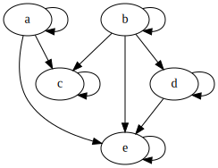

Definition A partial order is a pair \((X, \leq)\) composed of a set \(X\) called the ground set and \(\leq\) is a binary relation with the following relation: - reflexivity: \(x \leq x\ \forall x \in X\) - transitivity: \(x \leq y \land y \leq z \implies x \leq z\ \forall x,y,z \in X\) - antisymmtry: \(x \leq y \land y \leq x \implies x = y\ \forall x,y \in X\)
Let us consider an example of a partial order and some of the ways we can represent them.
Example Let \(X = \{a, b, c, d, e \}\), then we might have a partial order \(\\{(a,a), (a,c), (a,e), (b,b), (b,c), (b,d), (b,e), (c,c), (d,d), (d,e), (e,e)\\}\). This partial order can be represented as a matrix.
\[\begin{array}{c c} &
\begin{array}{c c c c c} a & b & c & d & e \\
\end{array}
\\
\begin{array}{c c c c c}
a \\
b \\
c \\
d \\
e \\
\end{array}
&
\left[
\begin{array}{c c c c c}
1 & 0 & 1 & 0 & 1 \\
& 1 & 1 & 1 & 1 \\
& & 1 & 0 & 0 \\
& \huge 0 & & 1 & 1 \\
& & & & 1 \\
\end{array}
\right]
\end{array}
\]
Another representation is a directed graph (AKA a digraph):
The previous example only required a relatively small subset of the Cartesian \(X \times X\). When you a have too many elements in \(X\) to deal with by hand, one quick Python script to make the pairs in a format suitable for \(\LaTeX\) is the following:
from itertools import productfrom graphviz import DigraphX ='a', 'b', 'c', 'd', 'e'XxX = ['('+', '.join(i) +')'for i in product(X,X)]XxX =sorted(XxX)XxX =str(XxX).replace("'", "")XxX = XxX.replace("[", "\\\\{")XxX = XxX.replace("]", "\\\\}")print(XxX)
XxX ='aa', 'ac', 'ae', 'bb', 'bc', 'bd', 'be', 'cc', 'dd', 'de', 'ee'D = Digraph('example_partial_order')for xx in XxX: D.edge(xx[0], xx[1])D

The digraph diagram in the previous example can be made with the following snippet of code:
from graphviz import DigraphXxX ='aa', 'ac', 'ae', 'bb', 'bc', 'bd', 'be', 'cc', 'dd', 'de', 'ee'D = Digraph('example_partial_order')for xx in XxX: D.edge(xx[0], xx[1])D.view()
This will produce a portable document formatted file named example_partial_order.gv.pdf. {: .prompt-tip}
Definition A strict partial order is a pair \((X, <)\) composed of a set \(X\) called the ground set and \(<\) is a binary relation with the following relation: - transitivity: \(x < y \land y < z \implies x < z\ \forall x,y,z \in X\) - asymmetry: \(\lnot (x < y \land y < x) \ \forall x,y \in X\)
Proposition The digraph representation of a strict order is a directed acyclic graph (DAG).
Often we can start with a strict order and derive similar results for a corresponding (non-strict) partial order.
Definition\(\{x, y\}\) are a comparable pair if \(x < y \lor y > x\), denoted \(x \sim y\).
Definition A graph \(G = (V, E)\) whose edge set \(E\) is the set of comparable pairs of a partial order is called the comparability graph.
Example Suppose we have the strict partial order \(\\{(a,c), (a,e), (b,c), (b,d), (b,e), (d,e)\\}\), then its comparability graph would look like:
flowchart TB
a o--o c
a o--o e
b o--o c
b o--o d
b o--o e
d o--o e
Definition\(\{x, y\}\) are an incomparable pair if \(\lnot (x < y \lor y > x)\), denoted \(x \parallel y\).
Definition A graph \(G = (V, E)\) whose edge set \(E\) is the set of incomparable pairs of a partial order is called the comparability graph.
Example Suppose we have the strict partial order \(\\{(a,c), (a,e), (b,c), (b,d), (b,e), (d,e)\\}\), then its incomparability graph (AKA cocomparability graph) would look like:
flowchart TB
a o--o b
a o--o d
c o--o d
c o--o e
Proposition The edge set of an incomparability graph is the complement of the edge set of the comparability graph.
Definition A cover relation \(x \prec y\) is satisfied when \(x < y\) and there does not exist \(z\) such that \(x < z < y\).
Definition A graph \(G = (V, E)\) is a cover graph when its edge set \(E\) is a collection of pairs satisfying a cover relation.
Example Suppose we have the strict partial order \(\\{(a,c), (a,e), (b,c), (b,d), (b,e), (d,e)\\}\), then its cover graph would look like:
flowchart TB
a o--o c
a o--o e
b o--o c
b o--o d
d o--o e
Definition A directed graph \(D = (V, E)\) is a directed cover graph when its edge set \(E\) is a collection of pairs satisfying a cover relation and the order of the pairs is represented with arcs.
Example Suppose we have the strict partial order \(\\{(a,c), (a,e), (b,c), (b,d), (b,e), (d,e)\\}\), then its directed cover graph would look like:
flowchart TB
e --> a
e --> d
c --> a
c --> b
d --> b
Definition A cover diagram is a drawing of the directed graph representing a cover relation such that the edges are cover pairs \((x,y)\). Edges are drawn in such a way that \(x\) is below \(y\) (in the graph embedding) ad the edge is \(y\)-monotone.
Example Suppose we have the strict partial order \(\\{(a,c), (a,e), (b,c), (b,d), (b,e), (d,e)\\}\), then its cover diagram would look like:
The previous example can be plotted using the following Python script:
import matplotlib.pyplot as pltimport networkx as nxg = nx.Graph()g.add_edge('a', 'c')g.add_edge('a', 'e')g.add_edge('b', 'c')g.add_edge('b', 'd')g.add_edge('d', 'e')pos = {'a':(0,1),'b':(1,0),'c':(0,3),'d':(2,2),'e':(1,4)}nx.draw(g, pos=pos, labels={i:i for i in g.nodes()}, node_color=(0.5,)*3)plt.savefig('example_cover_relation_diagram.png', dpi=300, transparent=True)plt.close()
{: .prompt-tip}
Special Classes of Orders
linear orders (aka total orders, aka chains).
Important in computer science problems such as sorting.
Important in mathematics for defining sets of numbers such as \(\mathbb{N}\), \(\mathbb{Z}\), \(\mathbb{R}\) and others.
Boolean lattices
\(B_n = (2^{[n]}, \subseteq )\) where \[[n] = \{ 1, \ldots, n \}\]
Looks at subsets of \(n\) ordered by inclusion
Proposition The subset relation on any family of sets is an order relation.
Definition For \(A \subseteq X\) we have the down-set of \(A\) being \[D[A] = \bigcup_{a \in A} D[a] = \{ x | \exists a \in A\ \text{s.t.}\ x \leq a \}\].
Proposition Every finite order is the containment order of a family of sets.
Proof Let \(P = (X, \leq)\) be an order relation.
For \(a \in X\) let \(D[a] = \{ x : x \leq a \}\) be the down-set of a.
Let \[y = \{ D[a] : a \in X \}\].
Now we claim that \(P \cong (y, \subseteq )\) where \(\cong\) is an order-preserving isomorphism.
Since isomorphisms are bijections, we take the bijection in this case to \(D : x \mapsto D[x]\).
We need to verify that \(D\) as we have just defined it is actually a bijection.
If a mapping is a bijection, then it is both injective and surjective.
Considering the injective case, let take two elements \(x\) and \(y\) such that \(x \neq y\) then there are three possibilities: - \(x < y \implies y \not\in D[x]\) - \(x > y \implies x \not\in D[y]\) - \(x \parallel y\) (i.e. \(x\) and \(y\) are not comparable in the order) which implies \((y \not\in D[x]) \land (x \not\in D[y])\)
Surjectivity is given by definition of \(D\).
And we have that \(D\) is order-preserving in the sense that \(x \leq y \iff D[x] \subseteq D[y]\). \[\blacksquare\]
Definition A lower bound of a subset \(S\) of partially ordered set \((P, \leq)\) is an element \(a \in P\) such that \(a \leq x \forall x \in S\).
Definition A lower bound \(a \in S\) is called an infinum (or greatest lower bound, or meet) of \(S\) if for all lower bounds \(y \in S\) we have \(y \leq a\).
Definition An upper bound of a subset \(S\) of partially ordered set \((P, \leq)\) is an element \(b \in P\) such that \(b \geq x \forall x \in S\).
Definition An upper bound \(b\) of \(S\) is called a supremum (or least upper bound, or join) of \(S\) if for all upper bounds \(z \in S\) we have \(z \leq b\).
Definition A finite poset on \(S\) is a lattice if every subset of \(S\) has an unique least upper bound (aka join or supremum) denoted \(\lor\) and an unique greatest lower bound (aka meet or infinum) denoted \(\land\).
Definition The down-set lattice of \(P\) given by \[D(P) = (\{ D[A] : A \subset X \}, \subseteq)\].
Definition A lattice \((L, \lor, \land)\) is distributive if the following identity holds for all \(x,y,z \in L\):